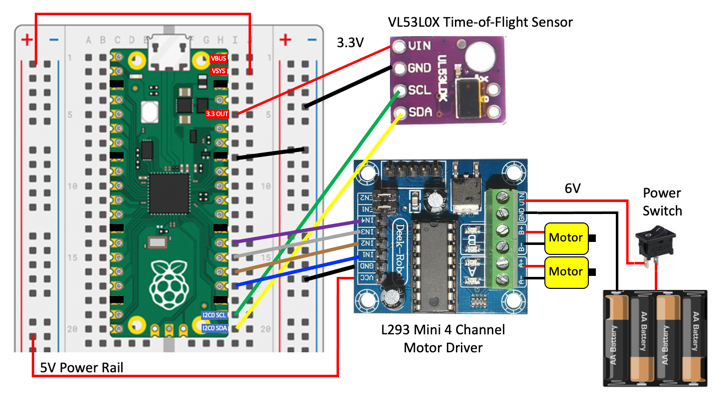

Raspberry Pi Pico Micropython Base Robot

This lesson describes our base robot kit in the CoderDojo Twin Cities coding club. This robot is programmed entirely in Python to be consistent with our Python Courses.
Base Robot Design
Our goal is to build a robotics platform for teaching computational thinking. Here are our main design goals:
- Low cost (under $25) so that most students can afford their own robot
- Open platform to make it easy to upgrade (sustainably)
- Interchangeable parts
- Minimal amount of soldering
Video
Here is a video of the collision avoidance robot in action:
Note that the forward-speed and distance-before-you-turn can be adjusted. You can see I didn't quite get the distance right and the robot bumps into some of the barriers.
Connection Diagram
Here is a connection diagram of the base robot.

Power Regulation
Note that the power comes from the battery at 6 volts and is connected to the input voltage of the motor controller board. The motor controller has a voltage regulator that converts any input voltage from 6 to 12 volts down to 5 volts. The output voltage of the motor controller is then connected to the power rail on the left, which is in turn connected to the VSYS input to the Pico. The Pico, in turn, has another voltage regulator that drop the input from VSYS down to 3.3 volts on the 3.3V OUT pin. This voltage is then used to power the distance sensor.
One of the downsides to this design is that as the batteries get low, once they drop below around 5 volts the double voltage drops cause the 3.3 OUT to become too low and the sensor becomes unreliable. A better design would be to find a motor controller that produces a stable 3.3 volts as the batteries slowly run down. Let us know if you can find one of these designs that cost under $2.
Hardware Description
Here is a summary of some of the parts we use in this robot and their approximate prices as of June 2021. Some parts come from China so you might need to wait 2-3 weeks for them to arrive.

Here is a Google sheet with these parts:
Detailed Parts List Google Sheet
Two Wheel Drive Smart Car Chassis
Our cars all use a standard Two Wheel Drive (2WD) SmartCar Chassis that is available in many retail outlets online.
- $5 Cytron 2WD Smart Car Chassis
- YouTube Video of Assembly - note that he does not remove the backing paper on the Plexiglass and he mounts the battery on the top. We like ours on the bottom.
Motor Driver

Software
All software is written in MicroPython.
Time-of-Flight Distance Sensor

We are using the VL53L0X time-of-flight distance sensor. This works on an I2C bus. After you have hooked up the Power (VCC to the 3.3 rail and GND) you must hook up the I2C data and clock.
1 2 3 | |
Many of our older robots used the ultrasonic ping sensors. The are unreliable with voltage drops as our batteries wear down.
Testing the Sensor Connections with the I2C Scanner
1 2 3 4 5 | |
You should see a decimal number returned. By default the I2C address is 41 (decimal) or x29 (hexadecimal).
Download the VL53L0X Driver
You will need to add a VL53L0X driver file to the file system on the pico.
We have a copy here: https://raw.githubusercontent.com/CoderDojoTC/micropython/main/src/drivers/VL53L0X.py
Time-of-Flight Sensor Test
Once the driver file is loaded we are ready to test the time-of-flight distance sensor.
1 2 3 4 5 6 7 8 9 10 11 12 13 14 15 16 17 | |
When you run this program a sequence of integers will appear in the console. The numbers usually will range from around 30 if there is an object directly in front of the sensor to a number around 1,300 for a object that is about 1.3 meters away from the sensor. There is a 1/10th of a second pause between each measurement. This can be changed in the last line of the program.
Motor Drive Test
After we have the four wires connected to the motor driver, we need to make sure we get the right wires to the right motors and motor directions. This program will help you debug this.
1 2 3 4 5 6 7 8 9 10 11 12 13 14 15 16 17 18 19 20 21 22 23 24 25 26 27 28 29 30 31 32 33 34 | |
One thing to remember is that the "Right" refers to our orientation from the rear of the car or if we were sitting inside the car. If the robot is facing you with the sensor in the front, it is the wheel on the left that we call the "RIGHT" wheel. Very confusing! Using this naming convention will pay of as we are walking behind larger robots.
Sample Drive and Turn Functions
We will need a set of function to drive our robot:
- Forward: both wheels going forward
- Reverse: both wheels going in reverse
- Turn Right: The right wheel turning backward and the left going forward
- Turn Left: The left wheel turning backward and the right wheel going forward
- Stop: all motors off
Our challenge is for each of these operations we must change the value of all four PWM signals. We can never have a motor be going both forward and reverse. Here are some sample drive functions:
1 2 3 4 5 6 7 8 9 10 11 12 13 14 15 16 17 18 19 20 21 22 23 24 25 26 27 28 29 30 31 32 33 34 35 | |
Turning Logic
1 2 3 4 5 6 7 8 9 10 | |
Test Motor Connections
1 2 3 4 5 6 7 8 9 10 11 12 13 14 15 16 17 18 19 20 21 22 23 24 25 26 27 28 29 30 31 32 33 34 | |
After you load this program, watch which wheels turn and in what direction.
Drive Functions
We will define Python functions for forward, reverse, turn right and turn left.
1 2 3 4 5 6 7 8 9 10 11 12 13 14 15 16 17 18 19 20 21 22 23 24 25 26 27 28 29 30 31 32 33 34 35 36 37 | |
Stop All Motors Program
One other thing to remember is that the PWM signals continue to be generated even after the main loop has stopped. This is because on the Pico, the four PWM signals are being continuously generated by an independent processors. To stop the motors you must run a separate stop program like this:
stop-all-motors.py:
1 2 3 4 5 6 7 8 9 10 11 12 13 14 15 16 17 18 | |
This can be frustrating at times when you can't find the stop program. I like to bring the stop program up in a separate tab when I am writing robot motor code.
To
figure out how to write an interrup handler so that when the IDE STOP function is pressed the stop motors (and speaker) are stopped.
Collision Avoidance Logic
Final Program
To get this to work on battery power up you must name the program main.py and save it on the Raspberry Pi Pico.
Note
Make sure you have the VL53L0X distance sensor driver installed.
1 2 3 4 5 6 7 8 9 10 11 12 13 14 15 16 17 18 19 20 21 22 23 24 25 26 27 28 29 30 31 32 33 34 35 36 37 38 39 40 41 42 43 44 45 46 47 48 49 50 51 52 53 54 55 56 57 58 59 60 61 62 63 64 65 66 67 68 69 70 71 72 73 74 75 76 77 78 79 80 81 82 83 84 85 86 87 88 89 90 91 92 93 94 95 96 | |
More To Explore Labs
- Can you change the hard-coded parameters at the begging of the program? What happens when you make the POWER_LEVEL go too high and the TURN_THRESHOLD too low?
- What is the lowest POWER_LEVEL that will allow the robot to move? What if you changed the power from 6 volts to be 9 volts by adding two more AA batteries?
- Can you randomly turn right or left if you encounter and object? Note you will need to import the random library and generate a random number between 0 and 2 with the random.randint(0,2) function.
- How would you design a robot that you could adjust the parameters? What parameters would you change? What would their valid ranges be?